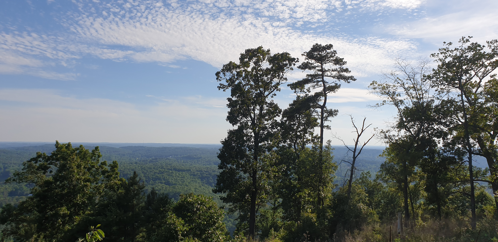
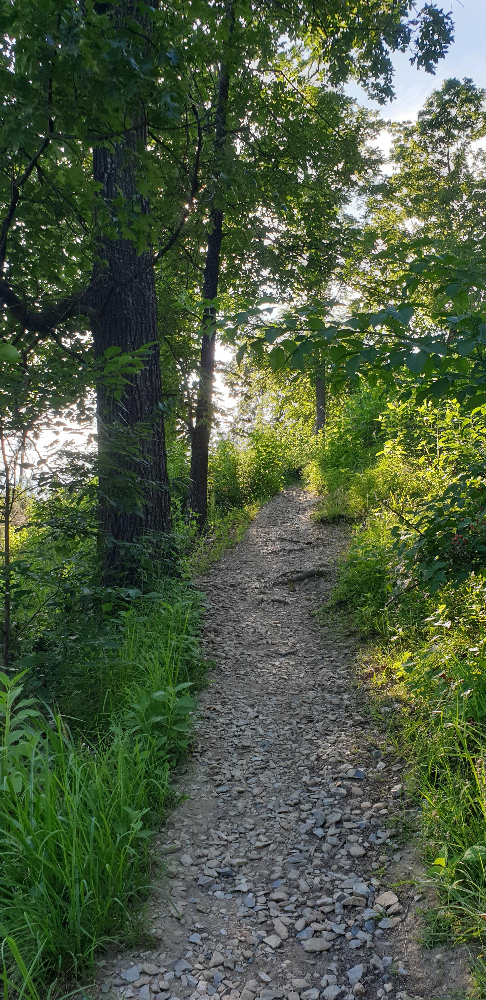
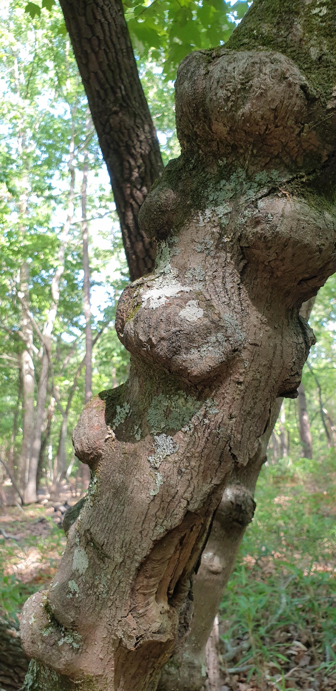
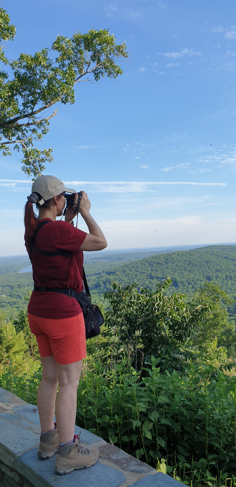

Weekend Escape
Morrow Mountain State Park
A simple weekend walk in North Carolina, shaped by forest paths, movement, and the kind of quiet that makes the day feel slower.
Morrow Mountain
North Carolina
Trail Walk
Weekend Escape
A simple weekend walk in North Carolina, shaped by forest paths, movement, and the kind of quiet that makes the day feel slower.
Watch Video
A quick glimpse from Morrow Mountain, saved as a small weekend note in motion.
Read the Journey

I like places that do not try too hard to impress.
Morrow Mountain is one of them.

A rocky trail through the forest, a strange tree covered with huge growths, and a viewpoint overlooking miles of North Carolina woodland.
Nothing dramatic. Nothing crowded.


Just a few hours outside, moving, exploring, and paying attention to small things that are easy to miss when life gets busy.